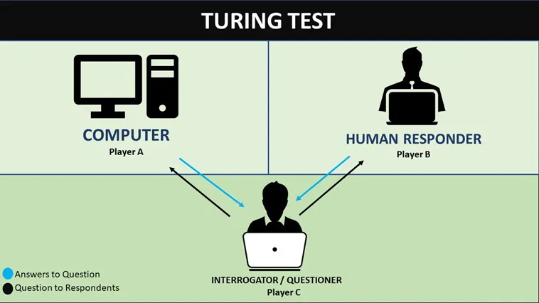

In 1950, Alan Turing asked a famous question: can machines think? He quickly noted that the words machine and think are hard to define clearly. So instead of trying to settle the meaning of those terms directly, he turned the abstract problem into a more workable test. That test later became known as the Turing Test, or the imitation game.

Source: https://seattlewebsitedesign.medium.com/what-is-a-turing-testt-d379477fed9b
The basic idea is simple. A human judge talks by text with two partners. One is a real human and the other is a machine. The judge cannot see either partner and must decide from the written replies which one is human and which one is machine.
The importance of the test is that it turns the difficult question of thinking into a question of behavior. The Turing Test does not directly measure whether a machine has consciousness, a soul, or inner experience. It asks whether the machine can perform in a conversation in a way that makes it hard to distinguish from a human.
For this reason, the Turing Test can also be understood as a test of replaceability. If a system can take a human role in conversation and lead a judge to mistake it for a person, or leave the judge close to random guessing, then the system shows that it can substitute for a human role in that interaction. It does not prove that the machine truly thinks. It shows that the machine can act like a human in a social situation.